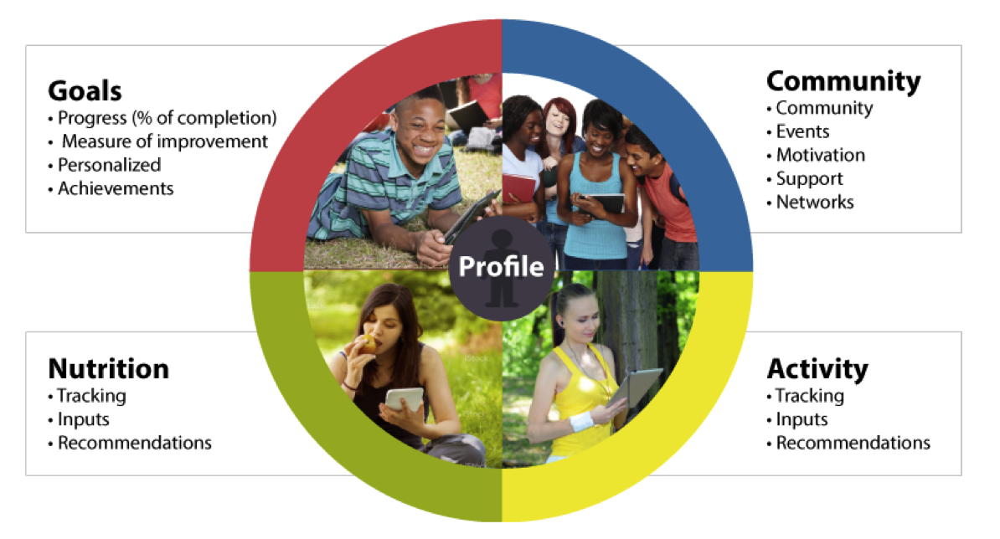

Through collaboration with local schools, we are investigating how technology can be utilized to augment individual's health and wellness goals in its role in achieving healthy, lasting behavioral and lifestyle change. To accomplish this task we have created a web-based social wellness platform (FitSpace), which allows students to create and track a variety of fitness and nutritional goals, as well provide them feedback to their progress. Utilizing the data generated we aim to discover the characteristics of successful wellness practices for various demographic and social profiles. The hope is that these characteristics can then be taken outside the confines of the platform to help promote wellness practices without the need for a technological interface.
Download PaperToday over 17% of children in the U.S. are obese1. However, despite growing awareness the number continues to rise. While there have been a significant number of efforts to stem this epidemic, many of these efforts focus on a singular problem area such as increasing physical activity or improving a child’s nutritional awareness. Yet, it has been well-established that children’s behavior and development can be attributed to a multitude of factors, known as the socio-ecological model2. Thus it follows that in order to achieve lasting lifestyle change, these factors must be addressed as a whole. In fact, a prior study focused on obesity prevention efforts also promoted a “multi-sectoral collaboration” of local health departments, schools, hospitals3.
Currently the United Way is initiating this type of collective impact programming, aiming to utilize many different community programs, some previously validated such as CATCH and others new and upcoming such as prescription to play. For our part, iCeNSA has joined the collective impact, where we are now attempting to answer the question: how technology can be used to augment children’s goals to achieve healthy, lasting behavioral and lifestyle changes. Further we are investigating the role of technology within the complex framework of collective impacts.
FitSpace is a web-based wellness platform, which focuses on the four main areas seen in the image below. The platform allows students to create and track a variety of fitness and nutritional goals as well provide them feedback to their progress on each. The ability to monitor progress is central to our work, as we aim to understand the factors of improvement not only successes or failures. Students can affiliate with teacher and coach moderated groups, in order to provide a central information hub for their class and athletic activities. The platform can also be integrated directly into the classroom curriculum, as teachers are provided the ability to host educational materials directly on FitSpace. Finally, teachers are also given the ability to generate personalized reports for each student, detailing their nutritional and activity progress in respect to their goals and recommended nutritional guidelines.
